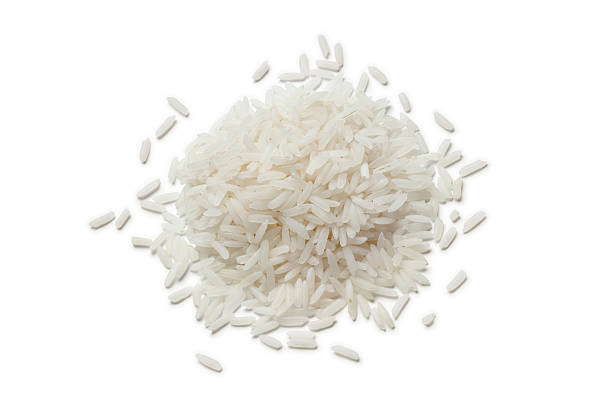

Rice Recipe

I don't believe in food blogs, so without further adieu, here is the recipe.
Ingredients
- Rice
- Himalayan mountain water (from Mt. Everest if possible)
- Himalayan salt
Instructions
- Cook the rice in a large saucepan over medium-high heat until it is cooked.
- Add the Himalayan salt and Himalayan mountain water and bring to a boil.
- Reduce the heat and simmer for 20 minutes.
- Serve the rice with a side of rice ketchup.